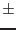

Two event files, one per RGS, were built merging 29 observations of empty fields with different levels of background. Due their large size, these files were divided into 16 smaller event files per RGS according to the value of the "Background Level Indicator", hereafter BLI, defined as the countrate of the off-axis region of CCD9:
XDSP_CORR  -3.E-4 rad OR XDSP_CORR
-3.E-4 rad OR XDSP_CORR  3.E-4 rad
3.E-4 rad
which corresponds roughly to  1 arcmin from the on-axis position.
First and second order spectra were extracted from each event file. These spectra are the templates used to derive the model background spectra.
First, the CCD9 off-axis light curve of the observation is computed. Then, the fraction of the light curve within each of the 16 predefined BLI levels is calculated, and the template spectra are combined weighted by these fractions. This weighted sum is the model background spectrum for the observation. No further normalization is required.
The only restriction to the use of this task is the compatibility in the binning in beta of the input event file and the templates event files. The latter have been processed with the 'rgsproc' defaults.
For more details on the procedure used to derive the templates, the definition of the BLI and some usage examples, please see Ref. [1]